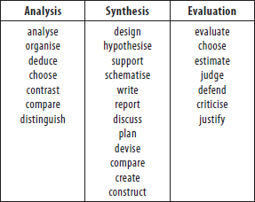
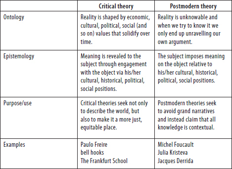
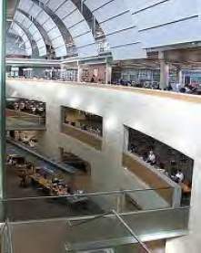
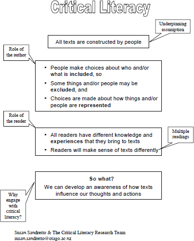
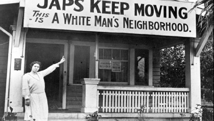

Theory and practice need each other. Melanie Walker (2003) writes: “Without action and practice, talk about education is arid; without theories, talk about educational practice is impoverished” (p. 185). I couldn’t agree more. As Kanavillil Rajagopalan (1998) explains, it is in our nature as humans to be “theorizing creatures” (p. 337) or sense makers. Teachers theorise about their practice all the time. Just spend some time in the tearoom of any school and you will hear teachers making sense of what is happening in their classrooms:
Some teachers say the boys don’t read, they talk, they’re visual. Girls want the notes on the board. If they don’t have notes to copy down they’re lost, whereas if we wrote lots of notes, we lose the boys. The boys want to see something visual, like when I was doing Macbeth. I was doing the play, but then also at the end of each act I showed the DVD and so that was re-informed in visual. For instance, they visualise part of the text in their head, and they say ‘Can we see that again?’ ‘Can we go back to that bit?’ So maybe, I don’t know … those girls just want to copy notes. They could spend a whole period just copying notes. That’s what they want. They want the information. Our guys don’t want to write notes. (RTWD, 17/08/07, p. 3)2
What you won’t hear—or at least not very often—is a peppering of that talk with the “big” names of academia, or references to published theory. It would be unusual for the passage above to have been put like this:
Well, I don’t want to be accused of essentialism, but I really do think Gardner’s theories about multiple intelligences work along gender lines. Some teachers say the boys don’t read, they talk, they’re visual. Girls want the notes on the board. If they don’t have notes to copy down, they’re lost, whereas if we wrote lots of notes, we lose the boys. The boys want to see something visual, like when I was doing Macbeth. I was doing the play, linguistic intelligence, but then also at the end of each act I showed the DVD and so that was re-informed in visual, or spatial intelligence. For instance, they visualise part of the text in their head, and they say, ‘Can we see that again?’ ‘Can we go back to that bit?’ So maybe, I don’t know. Foucault would say that these differences have nothing to do with biological sex, that the students have just been caught in a discursive net and in order to be intelligible, gendered subjects they have constituted themselves as preferring to learn in these ways … so those girls just want to copy notes. They could spend a whole period just copying notes. That’s what they want. They want the information. Our guys don’t want to write notes.
Now you may be having a quiet chuckle to yourself right now at how that last conversation sounded. However, just because you don’t give an academic citation for your theories doesn’t mean you don’t have any, that they aren’t valid, or that your theories can’t be linked to wider schools of thought. All viewpoints come from somewhere. This chapter will explore where the various theories that underpin different practices of critical literacy come from.
Devoting an entire chapter to theory is not without its risks. What I don’t want to do is increase the divide between theory and practice for teachers. In fact, I want educators to feel comfortable to play around with theory. We develop a system of beliefs as we amass a lifetime of experiences. This system of beliefs informs our teaching practice and is a way of theorising about our work. Theory is a tool, and, as we will see in this chapter, there are many different tools to choose from for critical literacy. Stephen Ball (1995) extols the virtue and necessity of theory:
Theory is a vehicle for ‘thinking otherwise’; it is a platform for ‘outrageous hypotheses’ and for unleashing criticism. Theory is destructive, disruptive and violent. It offers a language for challenge, and modes of thought, other than those articulated for us by dominant others. It provides a language of rigour and irony rather than contingency. The purpose of such theory is to de-familiarise present practices and categories, to make them seem less self-evident and necessary, and to open up spaces for the invention of new forms of experience. (p. 266)
In other words, theory gives us alternative angles from which to look at our teaching practice and reflect on it. Don’t get me wrong: I know that theory won’t solve all of education’s ills. But what it can do is help us to think differently and challenge preconceived ideas. Thinking differently has the potential to affect our practices, which can help us to make classrooms and schools better places for more children. If this is possible—and I will argue that it is—then it is worth exploring different theories and considering their effects.
In this chapter I use two metaphors to think about theory. One is the metaphor of sunglasses. Most readers will feel comfortable with the idea that trying on different pairs of sunglasses changes the way the world looks. Well, theory acts in the same way. Different theories let you “see” things differently. The other metaphor I will use in this chapter is the tool. Again, different tools are good for different things. A hammer will not do a very good job of turning over the garden. Different theories let you do different things. Two of the theoretical tools that contribute to different versions of critical literacy in the literature will be explored in this chapter.
In the remainder of the chapter we will consider the differences between critical thinking and critical literacy. We then discuss some metalanguage that will be helpful in looking more closely at two particular theoretical perspectives. Next, we look at these two theoretical perspectives as they are commonly used in the critical literacy literature. Finally, the chapter describes and then unpacks the version of critical literacy that will be used throughout the book.
I have found in my work with teachers in New Zealand that the terms critical thinking and critical literacy are often substituted for one another. This leads some teachers to think that they are implementing critical literacy when they are in fact implementing critical thinking (see also Edelsky & Cherland, 2006). This confusion is strengthened by the lack of explicit mention of critical literacy in any New Zealand educational policy. There is, however, attention to critical thinking in The New Zealand Curriculum (Ministry of Education, 2007b) and in the Effective Literacy Practice books (Ministry of Education, 2003, 2006), which only adds further to the confusion.
The term critical has a number of different meanings that can have positive or negative connotations. It can be used to mean faultfinding, as in hypercritical. It can imply analysis that leads to an opinion, such as critical thinking. The term critical can be used to mean extremely important, as in this is a critical phase. It can also mean indispensable or vital, such as the hard drive is critical to the functioning of a computer. It can mean life threatening: he is in a critical condition. Critical can signal a property of a system that is about to undergo a change, as in critical temperature. And, finally, critical can be used to indicate the amount of mass necessary to sustain a chain reaction.
Robert Ennis (1989) explains that critical thinking is “reasonable, reflective thinking focused on deciding what to believe or do” (p. 4). In education the term critical thinking is often associated with individual skills or procedures that can be developed and practised across different contexts (Bailin, Case, Coombs, & Daniels, 1999). Many teachers will be familiar with Bloom’s taxonomy, where critical can be used to refer to the so-called higher cognitive levels, including analysis, synthesis and evaluation (e.g. Paul, 1985). There are a number of resources available to teachers that describe the verbs to use in developing questions that will encourage students to think on these levels. Table 1 lists verbs frequently associated with analysis, synthesis and evaluation.
TABLE 1: BLOOM’S TAXONOMY: TABLE OF VERBS

Source: http://edtech.clas.pdx.edu/presentations/frr99/blooms.htm
However, teacher resources such as the list of verbs above are frequently removed from their cultural, social and political connections (Mulcahy, 2008). This separation can contribute to what Peter McLaren (1998) might call a sanitised version of critical thinking that has lost its transformative potential by removing any links to the “moral vision” required to explain why we need to develop critical thinking in students in the first place. For McLaren, these sorts of teacher resources “have neutralized the term critical by repeated and imprecise usage, removing its political and cultural dimensions and laundering its analytic potency to mean ‘thinking skills’” (p. 165).
We can make links between New Zealand curriculum documents and critical thinking as it is described above. For example, under the heading “Effective pedagogy” (Ministry of Education, 2007b, p. 34), we read:
Students learn most effectively when they develop the ability to stand back from the information or ideas that they have engaged with and think about these objectively. Reflective learners assimilate new learning, relate it to what they already know, adapt it for their own purposes, and translate thought into action. Over time, they develop their creativity, their ability to think critically about information and ideas, and their metacognitive ability (that is, their ability to think about their own thinking). Teachers encourage such thinking when they design tasks and opportunities that require students to critically evaluate the material they use and consider the purposes for which it was originally created. (p. 34)
Although the Ministry document promotes the “encourage[ment] of reflective thought and action” (p. 34), critical evaluation is presented as though it is unattached to any moral position. It is simply a neutral thinking skill, a developmental process that can be developed with practice (Bailin, et al., 1999). Sharon Bailin and her colleagues (1999) caution against a version of critical thinking solely equated with a mental process, describing it as “pedagogically mischievous” (p. 273). They explain that we can only judge mental processes by their outcomes, which makes it difficult for teachers to create the sorts of conditions needed for students to engage with critical thinking. How do you know that your students have used the processes you seek to develop when all you have to judge by are the results of their problem solving? In other words, it is difficult to know which mental processes, or critical thinking, the students have engaged in because we cannot see inside their heads.
In the second example from the New Zealand Curriculum (Ministry of Education, 2007b), thinking is positioned as a key competency:
Thinking is about using creative, critical, and metacognitive processes to make sense of information, experiences, and ideas. These processes can be applied to purposes such as developing understanding, making decisions, shaping actions, or constructing knowledge. Intellectual curiosity is at the heart of this competency.
Students who are competent thinkers and problem-solvers actively seek, use, and create knowledge. They reflect on their own learning, draw on personal knowledge and intuitions, ask questions, and challenge the basis of assumptions and perceptions. (p. 12)
This example again draws on a mental processes model of critical thinking (Bailin, et al., 1999), as described above.
In our third and final example from New Zealand educational policy, thinking critically is located as one aspect of a framework used to describe literacy acquisition (Ministry of Education, 2003). In the handbook for teachers, Effective Literacy Practice in Years 1–4, thinking critically in literacy is described as follows:
Becoming literate involves reading and writing beyond a literal, factual level. It involves analysing meanings, responding critically to text when reading, and being critically aware when composing texts. It also involves responding to texts at a personal level, reflecting on them, and finding reward in being a reader and a writer. (Ministry of Education, 2003, p. 24)
By avoiding an overt discussion of what is meant by critical, the authors missed an opportunity to make explicit connections between critical thinking and critical literacy. Without any signposts to the tenents of critical literacy, such as a focus on the relationships between language and power (Comber, 2001a), the critical thinking component of literacy acquisition runs the risk either of being ignored, or of being treated as a neutral thinking skill, thus overlooking the point that all evaluation depends on a perspective, a “moral viewpoint”, to use McLaren’s (1998) words from earlier.
So, what is the relationship between critical thinking and critical literacy you ask? As we will see shortly, you can do critical thinking without doing critical literacy, but you cannot do critical literacy without doing critical thinking. Let’s take a brief look at critical literacy as a way to compare and contrast it with critical thinking. Most descriptions of critical literacy include attention to issues of power and social critique (Edelsky & Cherland, 2006; Knobel & Healy, 1998; Mulcahy, 2008). Michele Knobel and Annah Healy (1998) explain that critical literacy is about “the analysis and critique of relationships among language, power, social groups and social practices” (p. 8). Just from this brief description of critical literacy we can see that the descriptions of critical thinking, as captured in the examples above, do not necessarily lead teachers and students to engage with questions such as “What view of the world is the text presenting? What different interpretations of the text are possible? Why has the composer of the text represented the characters in a particular way? or Who benefits from the text?” (Department of Education Tasmania, 2009). These are the kinds of questions we ask of texts when working with critical literacy.
We can distinguish critical thinking from critical literacy by their differing goals:
The goal of critical thinking is to help students focus on developing their ability to reason, analyze, evaluate, and create in a way that is disciplined and express their thoughts, feelings, and actions in a rational and clear manner. (Mulcahy, 2008, p. 18)
In contrast, the goal of critical literacy is to help students focus on uncovering the perspectives and positions that underpin texts, and to ask and judge what these perspectives might mean in terms of the social construction of their world. This is why we can do critical thinking without doing critical literacy, but we cannot do critical literacy without doing critical thinking. In the next section we consider a metalanguage for discussing the theoretical underpinnings of critical literacy.
REFLECTIVE INTERLUDE
• What is your current understanding of critical thinking?
• What is your current thinking on the difference between critical thinking and critical literacy?
For the educator new to critical literacy, trying to decide which version of critical literacy to deploy among the many on offer in the literature is a bit like trying to choose a brand of toothpaste. At first glance there are many choices and it isn’t readily apparent what the differences between them are. One key difference lies in the theory underpinning each particular version of critical literacy. But to examine these theories in any detail, we will need some metalanguage.
Every discipline has its own metalanguage, or a language for talking about language. One discipline’s essential vocabulary is another’s “jargon”. When we encounter the metalanguage of a new discipline we may find it difficult to understand and therefore feel excluded from that discipline because we are not familiar with its terminology. When you are “in the know” you are included because you can understand and use terms particular to a discipline with ease: you have cracked its code.
Education is often accused of being laden with jargon. Teachers are told to talk to parents in “plain English” (Te Kete Ipurangi (TKI), 2011). But often the terms we use are so particular that we cannot substitute others. Take the study of genetics in a biology class as an example. In the field of genetics we need to discuss terms such as allele, genotype, meiosis and recessive. These terms are necessary for the discipline to make meaning to other members of that discipline. When we teach genetics to students we equip them with the terms they will need to understand the field like a geneticist. We do not water down the terms or substitute others.
All the versions of critical literacy we will encounter in the literature will be informed by particular theoretical perspectives, whether the authors have explicitly stated these perspectives or not. Theoretical perspectives vary in the ways in which they view the production and validation of knowledge. Some philosophical terms associated with these ideas about knowledge are ontology and epistemology. Ontology has to do with conceptions of reality and being (Crotty, 1998). Ontological questions are concerned with existence and being, such as Does God exist?, What does exist? or What am I? Epistemology has to do with conceptions of knowledge, its nature and how we come to know (Guba, 1990). Epistemological questions are concerned with knowing: What counts as knowledge? What do we know? and How can we know? (Crotty, 1998).
Different theoretical perspectives are underpinned by different ontologies and epistemologies. These contribute to the strengths and limitations of the theories. For the sake of simplicity I am going to focus on the two most commonly cited theoretical perspectives in the critical literacy literature: critical theory and postmodern theory.3
We can think of the term critical social theory as an umbrella term for a whole host of theories that systematically undertake a critical analysis of classrooms, schools and schooling (Anyon et al., 2009; Apple, 2010). (For an overview, see Table 2.) Critical social theories include feminist, Marxist, postcolonial and poststructural theories, to name just a few (Leonardo, 2010). Critical social theory seeks to problematise the taken-for-granted and asks questions about the production of knowledge. In terms of literacy education, using the tools of critical social theory an educator concerned about varying levels of literacy in his/her class might ask, Who is excluded by the literacy texts we currently use? rather than Why are these students not acquiring literacy as quickly as those students?
TABLE 2: OVERVIEW OF CRITICAL THEORY AND POSTMODERN THEORY

Source: Table based on (Guba & Lincoln, 2005; Koro-Ljungberg, Yendol-Hoppey, Smith, & Hayes, 2009; Lather, 2006).
Critical theory, a descendent of critical social theory, has been used to describe theories that have developed out of the work of the Frankfurt School, including the theories from Paulo Freire, which are examined in greater depth below. The Frankfurt School was established in Germany in 1923 via the work of Adorno and Horkeimer during the Nazi reign, and shifted first to Geneva in 1933 and then to New York in 1934 (Giroux, 2003). By 1953 the school and its scholars had returned to Germany. In short, the members of the Frankfurt School were interested in developing theoretical resources that attended to, in their view, the limitations of Marxism (an overemphasis on the means of production to shape history) and positivism, or the scientific method (which did not encourage internal critique or critique of the ways in which scientific knowledge could be used to disempower people) (Giroux, 2003). The theoretical resources developed by the members of the Frankfurt School are generally categorised as “critical theory”.
Critical theory can refer to a way of thinking and a method for critique (Giroux, 2003). Critical theory is informed by a constructionist epistemology (Crotty, 1998). This means that subjects construct knowledge as they interact with objects. In this view, knowledge is not something already existing that is found by subjects. Rather, “knowledge emerges only through invention and re-invention, through the restless, impatient, continuing, hopeful inquiry human beings pursue in the world, with the world, and with each other” (Freire, 1999, p. 53). In other words, knowledge is socially constructed. The goal of an analysis underpinned by critical theory, first and foremost, is social change (Giroux, 2003). Critical theorists not only seek to describe the world as they find it, but also seek to change it. Critical theorists do not claim to be neutral observers; rather, they believe that all research, and education, is political. A critical theorist’s position is concerned with issues of power and taking sides to contribute to the formation of a society that is not marked by injustice. An important element of critical theory is its emphasis on the role of reflection in the construction of knowledge; that is, it critiques both the processes used to create new knowledge and the knowledge that is created.
The work of the late Paulo Freire (1921–1997) has been located within the critical tradition (Crotty, 1998). He began his work as an adult literacy educator in Brazil in the early 1960s before he was forced into exile, largely due to the political nature of his programme. His theory of literacy education, which informs a number of descriptions of critical literacy, is focused on conscientisation, praxis and problem-posing.
Conscientisation is about consciousness raising (Freire, 1999). It “refers to learning to perceive social, political, and economic contradictions, and to take action against the oppressive elements of reality” (Freire, 1999, p. 17). For Freire, conscientisation is a means for oppressed peoples to develop a critical consciousness “so that through transforming action they can create a new situation” (Freire, 1999, p. 29). Conscientisation is a result of praxis. Praxis is the cycle of “reflection and action upon the world in order to transform it” (Freire, 1999, p. 33). Problem-posing education encourages praxis. Freire viewed problem-posing education as an antidote to traditional forms of education that sought to indoctrinate students. Problem-posing education both presupposes and supports critical consciousness, where the teacher and the students are conscious of the object under study but also conscious of their own place as historically located beings. In practice, problem posing involves the teacher repositioning him/herself to work not as an expert but alongside the students as they investigate an issue of concern. The issue under investigation comes from student experience (Wink, 2000).
Freire’s problem posing formed the heart of his literacy education programmes, which supported adults deemed illiterate to interrogate, firstly, their world, and then the word. One example of a problem-posing approach to critical literacy can be found in Lee Heffernan and Mitzi Lewison’s (2005) article, in which they describe the transfer of critical literacy from the classroom to the lunchroom. In what become known as “the desegregation project”, a group of students initiated a disruption of the voluntary seating arrangements in the cafeteria organised by gender. By taking action, the students were engaging in praxis. They were reflecting on an issue and acting on their reflections. Ira Shor (1999) explains that “the praxis of critical literacy involves language in and for action beginning from everyday words and knowledge students bring to class” (p. 15). Versions of critical literacy that draw on Freire’s theories emphasise the interaction between readings of the local and the global that begin with the concerns of students (Freire & Macedo, 1987).
As noted earlier, there are a number of Freirian-inspired versions of critical literacy. For Gary Anderson and Patricia Irvine (1993), it
is learning to read and write as part of the process of becoming conscious of one’s experience as historically constructed within specific power relations. The goal of critical literacy … is to challenge these unequal power relations. (p. 82)
Here we can see explicit links to Freire’s concept of conscientisation. In another example, Peter McLaren (1988) explains that
Critical literacy … involves decoding the ideological dimensions of texts, institutions, social practices, and cultural forms such as television and film, in order to reveal their selective interests. The purpose behind acquiring this type of literacy is to create a citizenry critical enough to both analyze and challenge the oppressive characteristics of the larger society so that a more just, equitable, and democratic society can be created. (p. 214)
In this description, ideology refers to a framework for thinking (Macedo & Bartolomé, 2001). For example, a text that has a feminist ideology might have a focus on the role of gender. Another key element of this definition is its combination of analysis and action. In this conceptualisation of critical literacy, readers not only decode or analyse texts, they also do something about what they have found as they work towards a more just society as they have defined it.4
Rebecca Powell, Susan Chambers-Cantrell and Sandra Adams (2001) describe three basic assumptions underpinning critical literacy:
First, critical literacy assumes that the teaching of literacy is never neutral but always embraces a particular ideology or perspective. Second, critical literacy supports a strong democratic system grounded in equity and shared decision making. Third, critical literacy assumes that literacy instruction can empower and lead to transformative action. (p. 773)
We can see the influence of critical theory in these definitions via the attention to critical analysis, reflection and social change.
The final example of critical theory-inspired versions of critical literacy I will consider is the response to a reader’s question about the meaning of critical literacy:
Critical literacy education pushes the definition of literacy beyond the traditional decoding or encoding of words in order to reproduce the meaning of text and society until it becomes a means for understanding one’s own history and culture and their connection to current social structure, and for fostering an activism toward equal participation for all the decisions that effect and control our lives. (Shannon & Luke, 1991, p. 518)
This version of critical literacy echoes Freire’s vision, whereby students “read the word and the world” (Freire & Macedo, 1987). It also focuses attention on thought and action, or praxis. Students involved in this version of critical literacy education would become conscientised, or aware of their position, as well as the position of the author, through their critical engagements with texts (Mayo, 1995). This awareness would enable them to better engage in praxis. Teachers could provide a critical literacy programme by engaging with students as co-investigators in dialogue that respects both the teachers and students. These investigations would support students to critique the status quo and take action.
As noted earlier in this chapter, every theoretical tool has it strengths and limitations. Versions of critical literacy underpinned by critical theory may not be appealing to some teachers due to their focus on social change. For example, according to Larraine Wallowitz (2008a), “a crucial component for developing [a] critical perspective on literacy is social action” (p. 228). For any version of critical literacy that claims to follow Freire’s tenets, social action can be viewed as a “foundational tenet” (Jones, 2006). Mitzy Lewison, Christine Leland and Jerome Harste (2008) position “taking action to promote social justice” (p. 12) as a dimension of critical social practice in their model of critical literacy. While taking action as a result of the critical analysis of texts is in keeping with the critical theory tradition, teachers working in some contexts may find it unpalatable to “push their students toward action” (Lewison, et al., 2008, p. 135). Other teachers may hesitate to be seen to impose their views or their concerns on their students.
Another challenge is that it becomes difficult for teachers to plan ahead for critical literacy lessons that are developed out of concerns highlighted by their students (Jones, 2006). Freire would see this challenge as a strength, because it does not prescribe a recipe or set of “best practices” (Stevens & Bean, 2007) for teachers to follow. Some educators wanting clearer direction have criticised the perceived emphasis of theory over practice, seeing this as a limitation of Freirian versions of critical literacy. However, as noted by Peter McLaren (1999), avoidance of sequential, pre-planned lessons allows educators to adapt critical literacy to their students and contexts.
Another important strength of a version of critical literacy influenced by critical theory is its focus on critical reflection. Not only are teachers encouraged to support students to interrogate the ways in which knowledge is constructed and legitimated, but they are also encouraged to reflect critically on the ways they are enacting their vision of critical literacy in the classroom. Critical reflection on critical literacy practice includes reflection on the particular philosophical heritage of the version of critical literacy one is following (Stevens & Bean, 2007). This chapter aims to support educators to consider their theories of critical literacy, as well as their practices.
REFLECTIVE INTERLUDE
• What is your understanding of critical theory now?
• How might you use critical theory to inform you classroom practice?
• What questions still remain?
It is tempting to think that postmodernism comes “after” modernism, and in fact it would really make understanding the two easier. Unfortunately, it is not that simple. Postmodern theories developed in response to modernism; to modernism’s reliance on rationality as the correct means to find the truth and modernism’s view of progress (Crotty, 1998; Featherstone, 1988). (See Table 2 for an overview.) However, this does not mean they are distinct from each other; rather, postmodern theories coexist in a state of “permanent criticism” (Foucault, 1988a, p. 155) of modernism (see also Berlin, 1993). Vanessa Andreotti (2010) suggests that we can think of the “post” in postmodern as “questioning”. A look at the differences between modern and postmodern architecture may be useful in helping to illustrate the differences between modern and postmodern educational theories.
Modern architecture developed after World War I. It was largely focused on the principle that “form follows function” (Ghirardo, 1996, p. 19). In other words, the function of a building should determine its design. This principle was combined with a faith in the ability of form, or design, to convert the world and support social restructuring (Ghirardo, 1996). Modernist architects such as Le Corbusier (Charles-Édouard Jeanneret-Gris) sought to transform urban environments with schemes such as large-scale housing projects that could solve housing and other social problems. These schemes, however, failed to realise their utopian ideals and were resoundingly criticised for failing to capture the diversity and complexity of urban spaces (e.g. Jacobs, 1972). The Richardson Building at the University of Otago provides an example of modern architecture with its emphasis on minimalism and function. It was built in 1979 and has been described as belonging to the Brutalist School due to its heavy concrete façade. Architects such as Le Corbusier have had their work labelled Brutalist for their use of barren forms and unrefined surfaces (Shaw, Morrison, & McCredie, 2003).
FIGURE 1: RICHARDSON BUILDING, UNIVERSITY OF OTAGO
Source: http://en.wikipedia.org/wiki/File:University_of_Otago_Richardson_Building.jpg
We can make links between the social ideals of modern architecture and educational theories with a modernist heritage. We can see critical theory’s goal of social change echoed in modern architecture’s “true sphere, which is economic, sociological and altogether at the service of humanity” (Avery, 2003, p. 14). Critical theorists, as we saw earlier, are also focused on consciousness raising, which includes attention to social, political and economic conditions (Freire, 1999).
Postmodern architecture developed in response to modern architecture. Postmodern architects such as Robert Venturi believed that architecture should be divorced from grand social aims and instead should emphasise “complexity and contradiction” (Ghirardo, 1996, p. 18). Postmodern architects do not intend to give meaning to the forms they create, but rather believe that we make meaning by drawing on other buildings or forms we are familiar with. The library at the University of Otago demonstrates a postmodern heritage, using discontinuity, or a complex mix of forms, to allow the user to make meaning of the building in multiple ways (Ghirardo, 1996).

FIGURE 2: CENTRAL LIBRARY, UNIVERSITY OF OTAGO (INTERIOR)
Source: http://en.wikipedia.org/wiki/File:University_of_Otago_New_ Library_%28inside%29.jpg
FIGURE 3: CENTRAL LIBRARY, UNIVERSITY OF OTAGO (EXTERIOR)
Source: http://t3.gstatic.com/images?q=
tbn:ANd9GcRJUCdhUVJlf5hzT9iC80OPZqD0gHovq9Ts5CIntMoJk0W_mx62
As we shall see shortly, there are strong links between the “complexity and contradiction” of postmodern architecture and these same themes in postmodern educational theories. However, in distinguishing postmodernism from modernism, I do not wish to imply that they are polar opposites. In comparing and contrasting modern and postmodern theories, we must remember that by its very nature postmodern theory defies strict definition (Lather, 2007; Ritzer & Goodman, 2002). As explained by Maggie MacLure (1995):
Think of postmodernism as a kind of undoing of all the habits of mind of so-called Western thought that have prevailed over the last two centuries—the decidability of truth, the inevitability of progress, the triumph of reason, the possibility of a universal moral code, the objectivity of science, the forward march of history, the existence of the singular, autonomous self. These foundational principles are all to do with making the world knowable, accountable, unambiguous, generalisable, predictable, coherent, manageable, mutually comprehensible. (p. 106)
Thus postmodernism can be viewed as a way of viewing the world, a particular pair of sunglasses that help you see things, or question things, in certain ways. In particular, educators find postmodern theories useful ways to challenge things we have come to take for granted and highlight the diversity and complexity of the world that we live in (Lather, 1991; McLaren & Lankshear, 1993).
Although there is variation among postmodern theories, there are nonetheless some common elements. These include a rejection of grand narratives and a refusal to adopt teleological or ethical ideals (Scott & Morrison, 2005). To reject grand narratives (Lyotard, 1984) means that postmodern theories do not believe that there is one story that can be told, one way of explaining our experiences, one way of making social history appear to cohere to a predictable pattern (Ritzer & Goodman, 2002). Instead, postmodern theories emphasise the need to listen to multiple stories, the untold stories, and the stories from disaffected and disadvantaged groups as a means to move away from simplistic stories of causation and explanation (Sholle, 1992).5
A refusal to adopt ethical or teleological ideals means that postmodern theorists do not believe it is possible to dictate what is, for example, the good life for everyone. They believe that social, cultural and linguistic diversity unravel any overarching proclamations that would deny the varied knowledge and experiences that are relative to particular times and places (Scott & Morrison, 2005). In other words, “it is difficult to know what ‘better’ or ‘worse’ might mean for any individual or community at any particular time, in any context” (Schutz, 2000, p. 216) when discussing ideas like teaching for freedom.
In addition, all postmodern theories are informed by a subjectivist epistemology (Crotty, 1998). In this view, meaning is not “out there” waiting to be discovered; meaning is imposed on objects by subjects. In the postmodern theory of poststructuralism (Crotty, 1998), people make meaning through discourse and discursive practices (we will discuss this further shortly) (Davies, 2000). This means that the same object, a single mother, for example, will have a different meaning in different contexts (for example, in different cultural or religious contexts, or in different institutional contexts such as schools or the welfare office) (e.g. Carabine, 2001). We can think of different positive and negative ways in which the single mother has been constructed: a woman of loose moral virtue, a respected widow of a war hero, a teenager who will be a “bad” influence and needs to be educated away from others, and so on. Thus, when viewed through the sunglasses of poststructural theory, the single mother does not have any one, correct meaning, but rather the term invokes a plurality of meanings depending on the context.
Literacy instruction informed by postmodern theories places greater emphasis on multiple readings of texts, thus allowing students to bring their own personal experience to bear on the ways in which they make meaning of the texts (Meacham & Buendia, 1999). Multiple readings or interpretations are encouraged, with less emphasis placed on finding the “correct” reading. These multiple readings also have a critical edge that considers ways to problematise meanings that have become “normal” or taken-for-granted (Morgan, 1997).
Poststructuralism has been described as a type of postmodern thought (Lather, 1991). Agger (1991) distinguishes postmodernism from poststructuralism by describing postmodernism as “a theory of society, culture and history” and poststructuralism as “a theory of knowledge and language” (p. 112). Poststructuralism, like postmodernism, avoids neat and tidy definitions. Here, however, I will outline several key “principles” (Davies, 2004) of poststructural theory—discourse, deconstruction and subjectivity—in keeping with our development of metalanguage.
Discourse, particularly from the work of Foucault, is a key concept of poststructural thought. It encompasses the notion of language or text, but it is more than that. Discourse is described as “socially constructed and recognised ways of doing and being in the world, which integrate and regulate ways of acting, thinking, feeling, using language, believing and valuing” (Lankshear, 1994, p. 6). Joan Scott (1988) described discourse as “a historically, socially, and institutionally specific structure of statements, terms, categories, and beliefs” (p. 35). In education we have fields of discourse pertaining to teachers, students, teaching, curriculum, assessment, classroom management and so on. Thus the term discourse emphasises the power of language and encourages us to focus on the ways in which language works in different contexts.
Discourses can be viewed “as practices that systematically form the objects of which they speak” (Foucault, 1972, p. 49). As practices—in our case educational practices—discourses authorise what is possible or knowable: “Discourses are about what can be said and thought, but also about who can speak, when and with what authority” (Ball, 1990, p. 2). In terms of literacy instruction, we can consider the different discourses that have informed instruction. For example, we can see the difference in the practices of teachers who draw on discourses of whole language to inform their literacy instruction versus the practices of teachers who draw on discourses of phonics.
Deconstruction is a frequently used technique of poststructural researchers and theorists. Deconstruction is not about finding mistakes and replacing them with the “truth”; rather, it is about our awareness that there is no one truth and therefore we must constantly question the discourses we encounter. When deconstructing texts we are committing ourselves to questioning texts and discourses that have become taken-for-granted, as well as questioning the texts we ourselves author (Lather, 1991; Morgan, 1997). When provided with spaces to do so, we can use the tools of poststructural analysis to deconstruct discourses of literacy and instruction. For example, we could deconstruct our personal philosophies of literacy instruction. Which discourses inform them? Which discourses are omitted? What might this mean for the sort of literacy teachers we wish to be?
Subjectivity is another core concept within poststructuralism (Davies, 1994; St. Pierre, 2000; Weedon, 1997). Subjectivity, sometimes referred to as identity, is “the modes by which, in our culture, human beings are made subjects” (Foucault, 1983, p. 208). Subjectivity emphasises the process of becoming a subject, allowing that this process is never complete (Butler, 1997). Chris Weedon (1997) explains that “poststructuralism proposes a subjectivity which is precarious, contradictory and in process, constantly being reconstituted in discourse each time we think or speak” (p. 32). Thus subjectivity is a discursive construction. The poststructural subject is someone who simultaneously produces and takes up the discourses available to him/her. Bronwyn Davies (1994, 1997b) proposes that we use poststructural theory as a tool to examine the process of subjectification. As we identify the discourses involved in becoming a literacy teacher, for example, we can examine “the discursive possibilities that have been made observable through post-structuralist analysis” (Davies, 1997b, p. 274). This exercise would involve us in examining our subjectivity (What kind of literacy teacher am I?) and the implications of subjectification (the ways we become a literacy teacher) for ourselves and our students.
One example of an approach to critical literacy that attends to subjectivity can be found in Meredith Cherland’s (2008) work where she uses the texts of Harry Potter to support students to problematise constructions of gender. She explains that by using poststructural theory, teachers can support students to deconstruct the subject positions that are made available in texts. Cherland notes that one subject position in Harry Potter for young women is that of siren. According to Greek mythology, a siren is a sea nymph who lures sailors to their deaths. This is a subject position where women find themselves the object of the male gaze. Of course the subject position of siren did not first appear in Harry Potter; it has a long discursive history that continues to recreate itself: “it is one that is offered to them again, on a daily basis, in clothing stores, in films and music videos, in advertising, and in fairy tales” (p. 276). By calling attention to the constructed nature of the siren, students and teachers “can refuse to take up certain subject positions” (p. 277) and (re)consider the discourses they wish to reinforce.
There are a number of descriptions of critical literacy in the literature that are informed by poststructural theory. For example, Jennifer Hammond and Mary Macken-Horarik (1999) describe their version of critical literacy as underpinned by
the premise that language and other social semiotic systems work together to construct the cultural and social realities within which people live … We see the role of critical literacy as assisting students in developing insights into the ways in which … ideologies, identities, and power relations work in society and the ways in which language works to entrench and challenge those relations … Broadly, we define critical literacy as the ability to engage critically and analytically with ways in which knowledge, and ways of thinking about and valuing this knowledge, are constructed in and through texts. (p. 529)
We can trace this version of critical literacy to its poststructural roots. Poststructural approaches to critical literacy emphasise the social construction of language and literacy (Gee, 1993). A text does not represent one “truth” or reflect reality, but rather readers make (multiple) meaning(s) from texts, using the discursive resources they have available (Gee, 1996). A poststructural critical literacy seeks to undermine what we consider to be normal or given, and subvert what are considered to be universal truths (Morgan, 1997). Poststructural versions of critical literacy also consider the gaps and silences in texts, because what is not said can sometimes speak louder than what is present in a given text (Misson & Morgan, 2006).
In another example of critical literacy underpinned by poststructural theory, Davies (1997a) describes critical literacy as
the capacity to make language live, to bring oneself to life through language and at the same time, bring to bear on language a critique which makes visible the powerful force of rationality and linear patterns of thought, of usual speech patterns and usual metaphors, and a recognition of their constraints and limitations. (p. 28, original emphasis)
Here we can see poststructuralism’s focus on illuminating the ways language and power (or discourse) constitute us at the same time as we constitute ourselves through the discourses we choose. Consequently, it highlights the need to be reflexive about the ways we use language, or “turn … language back on itself to see the kind of work it does in constituting the world” (Davies et al., 2004, p. 361). Reflexivity on the power of language is very important because “real people get hurt by the workings of language, power … and discourse” (Gee, 1990, p. ix).
Jennifer O’Brien’s (2001) description of critical literacy is in keeping with key tenets of postmodernism. She explains:
Critical literacy is always and necessarily local … [it] is a position that conceives of literacy as never neutral, invariably interested, and always invested with power relationships … a critical position creates relationships, material effects, and subjectivities particular to the location; but you can never be sure of their precise nature. This makes critical moves not only broad ranging but potentially risky and exhilarating. (pp. 37–38)
Here we can see the postmodern emphasis on the local and specific, rather than totalising narratives. We can also see recognition of the shifting nature of subjectivity, as opposed to a fixed identity, and acceptance that we cannot anticipate the outcomes of a critical literacy lesson underpinned by postmodern or poststructural theories.
Ray Misson and Wendy Morgan (2006) explicitly describe their version of critical literacy as underpinned by poststructural theory and claim that their “whole book is making the case that poststructuralism provides the best framework we have for understanding texts and their relationship to human society and identity” (p. x). Misson and Morgan explain that when working from a poststructural frame, critical literacy views “language as socially situated and produced, hence as inherently ideological, and of our subjectivities as socially and ideologically constituted through language” (p. 20). Here we see reference to the ways that we are shaped and positioned through discourse, a key poststructural construct.
In this section I discuss some of the strengths and limitations of postmodern and poststructural theories. First, let’s consider the limitations.
The elements, or principles, of postmodernism that we examined earlier—that is, a rejection of grand narratives and teleological ideals—lie at the heart of the limitations that have been identified by critics. Postmodern and poststructural theories have been criticised for their inaccessible language (Kellner, 1988), and a lack of clear direction, or “answers”, for social issues (Cole, 2003). Postmodern writers have adopted a style of writing that tries to take into account the aims of postmodernism; that is, to avoid grand narratives, to be reflexive about how knowledge is produced, and to be careful about how the findings are represented (Constas, 1998). This has resulted in a style of writing that has been described by some as “opaque … obscure and long-winded” (McWilliam, 1993, pp. 200–201). For Aaron Schutz (2000), “postmodern writing generally seeks to complicate the idea of simple unities and identities” (p. 218). Erica McWilliam (1993) explains that “the difficulty is that one doesn’t so much read this text as wrestle with it” (p. 201). In his widely circulated parody, How to Speak and Write Postmodern, Stephen Katz (1995) suggests that to be an accomplished postmodernist:
First, you need to remember that plainly expressed language is out of the question. It is too realist, modernist and obvious. Postmodern language requires that one uses play, parody and indeterminacy as critical techniques to point this out. Often this is quite a difficult requirement, so obscurity is a well-acknowledged substitute. For example, let’s imagine you want to say something like, ‘We should listen to the views of people outside of Western society in order to learn about the cultural biases that affect us.’ This is honest but dull. Take the word ‘views’. Postmodernspeak would change that to ‘voices’, or better, ‘vocalities’, or even better, ‘multivocalities’. Add an adjective like ‘intertextual’, and you’re covered. ‘People outside’ is also too plain. How about ‘postcolonial others’? To speak postmodern properly one must master a bevy of biases besides the familiar racism, sexism, ageism, etc. For example, phallogocentricism (male-centredness combined with rationalistic forms of binary logic). Finally ‘affect us’ sounds like plaid pajamas. Use more obscure verbs and phrases, like ‘mediate our identities’. So, the final statement should say, ‘We should listen to the intertextual, multivocalities of postcolonial others outside of Western culture in order to learn about the phallogocentric biases that mediate our identities’. Now you’re talking postmodern! (para. 3)
While some may argue that his “recipe” for postmodern writing borders on the ridiculous, there are a number of readers who would concur after trying to “wrestle” with the writings of postmodern and poststructural authors. In terms of versions of critical literacy, some might say that the following description suffers the same illness as Katz (1995) is criticising:
If critical literacy, as a discourse, does not aspire to realise an ideal state (of being and society) but recognises that it is already a particular form of social practice, then this is what we as critical literacy teachers aspire to for ourselves and our students: to practise that practice within specific social contexts and relationships located in time and space. It will inevitably be an impure practice, shot through with contradictions and tensions, contingencies, self-sabotage and resistances from within and from other discourses, as well as by modest if uncertain changes in our students and ourselves. (Morgan, 1997, p. 28, original emphasis)
While this description of critical literacy is fully consistent with its theoretical heritage, there are probably a number of educators who would find it difficult to implement in practice.
The lack of a normative ideal, or explicit ethical norms, has led to the criticism that it becomes difficult to recognise social progress (Scott & Morrison, 2005).6 For some educators, postmodern theories fail to commit themselves to working towards social change or social justice: “In our view, ‘postmodernism’ is a theoretical virus which paralyses progressive thought, politics and practice” (Cole, Hill, & Rikowski, 1997, p. 187). Furthermore, postmodernism’s rejection of grand narratives and collective resistance means that there is a focus on the local (Agger, 1991). Mike Cole (2003) acknowledges that “localised struggle can, of course, be liberating for individuals and certain selected small groups” (p. 492). However, he goes on to argue that “postmodernism cannot set out any viable mass strategy or programme for an emancipated future” (Cole, 2003, p. 492) due to its rejection of grand narratives, and is more likely to result in “paralysing ambivalence” (Jones, 1993, p. 158) or a failure to provide generic strategies for social action.
The lack of a clear, normative ideal creates problems in the critical literacy classroom (Mellor & Patterson, 2001). A typical instructional strategy for a poststructural version of critical literacy involves supporting students to conduct multiple readings of any given text (e.g. McLaughlin & DeVoogd, 2004b; Morgan, 1997). Many teachers, however, would argue that all “readings” are not equal. That is, most teachers would be uncomfortable with and actively discourage racist, sexist or other such readings that marginalise and potentially harm others. Yet, if you are implementing a version of critical literacy underpinned by poststructural theory, how can you claim that any reading is better than another? To negotiate, but not eradicate, this tension, Bronwyn Mellor and Annette Patterson (2001) explain that “we have come to feel that we have to acknowledge the normativity of our practice in arguing for the production of particular readings over others” (p. 132). Thus it seems very difficult for critical literacy to avoid the issue of normativity.
Now let’s consider the strengths. One strength of poststructural theory, particularly in terms of critical literacy, lies in the way its focus on the power of language encourages us to uncover how language is implicated in the construction of reality (Agger, 1991). A focus on the ways a given text is constructed, and how that construction shapes our understanding and actions, encourages not only a critical stance towards texts, but also a critical stance towards the construction of the curriculum and schooling (Mellor & Patterson, 2004). A number of authors argue that a sceptical stance towards texts is a skill students will need throughout their lives (e.g. DeVoogd, 2006; McDaniel, 2004).
Another advantage of poststructural theory is the way in which it encourages reflexivity. As described in the introductory chapter, I view a balanced literacy programme as following the Four Resources model; that is, as involved in supporting students to learn the code, make meaning, use texts, and critically analyse texts (Luke, 1995; Luke & Freebody, 1999). Making use of texts includes designing or constructing texts (Janks, 2000). A focus on design and representation is particularly useful when working in a multiliteracies environment (The New London Group, 1996), as many of our students are constructing a multitude of texts both in and out of school. A poststructural theory of critical literacy encourages us to consider the ways in which our texts represent others and the possible effects of those representations (Stevens & Bean, 2007).
Reflective interlude
• What is your understanding of postmodern and poststructural theory now?
• How might you use poststructural theory to inform your classroom practice?
• What questions still remain?
• Which theories are you drawn to? Why?
The last theoretical position we will consider is critical postmodernism. Some authors argue that critical literacy needs the democratic vision of Freirean theory and the questioning stance of poststructural theory (McLaren & Lankshear, 1993; Sholle, 1992). As Anyon and her colleagues argue (Anyon, et al., 2009), we need theories that critically interrogate the macro (wider social contexts such as globalisation) and the micro (focus on, for example, classroom interactions between students).
Critical postmodernism can underpin a version of critical theory that takes into account the theoretical tools on offer from postmodernism and poststructuralism, while not losing sight of critical theory’s emancipatory goals (Aronowitz & Giroux, 1991; Sholle & Denski, 1993). As argued by Stanley Aronowitz and Henry Giroux (1991), critical postmodernism can provide us with “a language of both critique and possibility” (p. 190). They suggest that critical postmodern theories
must not only call into question forms of subordination that create inequities among different groups as they live out their lives but also challenge those institutional and ideological boundaries that have historically masked their own relations of power. (p. 194)
In other words, critical postmodernism maintains a normative vision of a better society while making use of poststructural tools of analysis to critique micro and macro workings of power.
This synthesis of critical theory and postmodern theory may satisfy the criteria for what Anyon (1994) describes as “useful theory” (p. 129). Useful theories, according to Anyon, integrate theory and practice and “would make usable recommendations to those who work for a more humanitarian, more equitable society, and, consequently, this theory will have a progressive effect on society itself” (p. 117).
Peter McLaren and Colin Lankshear (1993) argue for a version of critical literacy that takes account of the insights of critical postmodernism. They propose a critical literacy that supports critical analysis of the present as a means to transform the future, unpacks unspoken assumptions of the status quo and considers the effects of texts on our identities and agency. Critical literacy informed by critical postmodernism would “steer an ethical and political course” (p. 412) through the complex and contradictory discourses we must navigate each day.
The version of critical literacy used in Planting Seeds draws on critical and poststructural theories. In this book, critical literacy
describe[s] ways in which teachers and students can deconstruct traditionally taken-for-granted texts (Lankshear, 1994). We believe that critical literacy for classroom practice involves supporting students to become aware that:
• texts are social constructions;
• texts are not neutral;
• authors draw upon particular discourses (often majority discourses) and assume that readers will be able to draw upon them as well;
• authors make certain conscious and unconscious choices when constructing texts;
• which means that all texts have gaps, or silences, and particular representations within them; and,
• that texts then have consequences for how we make sense of ourselves, others and the world.
Another important aspect of critical literacy for us is supporting students in making connections between texts and their lived experiences.
(Sandretto & Critical Literacy Research Team, 2006, pp. 23–24)
The critical literacy poster (see Figure 4) was developed from the CLRT’s description of critical literacy to guide classroom instruction. It clearly presents an underlying assumption (“All texts are constructed by people”). This is followed by the roles of the author (“People make choices about who and/or what is included, so some things and/or people may be excluded, and choices are made about how things and/or people are represented”). Then the roles of readers are considered: “All readers have different knowledge and experiences that they bring to texts, and readers will make sense of texts differently”. This second role of the reader is a way for teachers to encourage multiple readings of the text under consideration in any given lesson. The poster concludes with “So what? We can develop an awareness of how texts influence our thoughts and actions”.

FIGURE 4: CRITICAL LITERACY POSTER
Although the underpinning assumption, and the roles of the author and reader, have clear links to poststructural theories, the final point of “So what?” has ties to critical theory’s concern with a normative ideal. Why should we support students to become text analysts? Well, quite simply, because texts are artifacts that can shape us in powerful ways. In other words, texts have the potential to shape people’s thoughts and actions. (See Figure 5 for just one of many examples of texts that have had profound effects.)

FIGURE 5: EXAMPLE OF A RACIST TEXT
Source http://ehistory.osu.edu/
In this chapter we began by considering the role that theory plays in driving our educational practices. I argued that theory and practice need each other, like teaching needs assessment. As one of the participating teachers mentioned in an exit interview:
I’ve really enjoyed having this chance to … read lots of readings, get lots of ideas and sort of talk about it and discuss it … because otherwise you’re busy teaching and you don’t really have the chance to think about sort of this more ‘theoretical’ stuff that you need to have an understanding of before you can move on. (Exit interview, 10/11/06, p. 4)
In other words, we need opportunities to reflect on theory and practice.
We have tried on the sunglasses designed by critical theorist Paulo Freire and poststructural theorists. We have found that educators frequently don these glasses to inform their critical literacy practices. We examined the strengths and limitations of the two sets of glasses and considered a combination of the two in critical postmodernism. I am aware that our brief explorations risk stereotyping the theories and suggest that readers interested in exploring these theories in greater depth look to the suggested readings at the end of this chapter.
Colin Lankshear (1994) has proclaimed that
there is no ultimate paradigm—no final orthodoxy—of critical literacy waiting to be uncovered. Rather, there are many ways in which coherent meanings for critical literacy might be—and have been—constructed. (p. 4)
In this chapter I have not advocated one theory or a one-size-fits-all approach, but have rather made available two theoretical perspectives, or tools, that you may find useful as a way to think about critical literacy. I agree with Rajagopalan (1998) that we must continually reflect on the theories that we are using in education and beware of the seduction of any one theory “to set practice on the right course once and for all” (p. 351). Knobel and Healy (1998) also emphasise the importance of regular, critical refection on our theories and practices of critical literacy:
Teachers also need to reflect continually on how they themselves are constructing what ‘counts’ as critical literacy in their classroom and what stance they are wittingly or unwittingly expecting students to take on social issues. Care must be taken that the teacher is not really engaging in a form of political manipulation, but instead in activities of analysis and critique that are open to discussion and different, or multiple, points of view. (pp. 4–5)
You may find that as you engage with critical literacy practices in your own context, you return to this chapter to consider and reconsider the most useful theories for the version of critical literacy that you wish to implement. As noted by Barbara Comber (2001a):
Critical literacy resists any simplistic or generic definitions because its agenda is to examine the relationships between language practices, power relations, and identities—and this analysis involves grappling with specific local conditions. (p. 271).
So while Planting Seeds offers a theory of critical literacy, what it looks like in practice is up to you. In the next chapter we take an in-depth look at dialogue.
REFLECTIVE INTERLUDE:
• What is your current understanding of theory?
• Which theories currently inform your literacy instruction?
• What is your current understanding of the terms critical theory, poststructuralism and critical postmodernism?
• Which theories do you think will underpin your critical literacy pedagogy? Why?
• What is your thinking about the relationship between theory and practice?
Critical thinking and critical literacy
Bailin, S., Case, R., Coombs, J. R., & Daniels, L. B. (1999a). Common misconceptions of critical thinking. Journal of Curriculum Studies, 31(3), 269–283.
Bailin, S., Case, R., Coombs, J. R., & Daniels, L. B. (1999b). Conceptualizing critical thinking. Journal of Curriculum Studies, 31(3), 285–302.
Clarke, L. W., & Labbo, L. D. (2005). “A stereotype is something you listen to music on”: Navigating a critical curriculum. Language Arts, 83(2), 147–157.
Cooper, K., & White, R. E. (Eds.). (2008). Critical literacies in action: Social perspectives and teaching practices. Rotterdam, The Netherlands: Sense Publishers.
Knobel, M., & Healy, A. (Eds.). (1998). Critical literacies in the primary classroom. Newtown, NSW: Primary English Teaching Association.
Mulcahy, C. M. (2008). The tangled web we weave: Critical literacy and critical thinking. In L. Wallowitz (Ed.), Critical literacy as resistance: Teaching for social justice across the secondary curriculum (pp. 15–27). New York, NY: Peter Lang.
Agger, B. (1991). Critical theory, poststructuralism, postmodernism: Their sociological relevance. Annual Review of Sociology, 17(1), 105–131.
Luke, A., & Woods, A. (2009). Critical literacies in schools: A primer. Voices From the Middle, 17(2), 9–18.
Morrell, E. (2008). Critical literacy and urban youth: Pedagogies of access, dissent, and liberation. New York, NY: Routledge.
Willinsky, J. (2008). Of critical theory and critical literacy: Connections to the legacy of critical theory. In K. Cooper & R. E. White (Eds.), Critical literacies in action: Social perspectives and teaching practices (pp. 3–20). Rotterdam, The Netherlands: Sense Publishers.
Freire, P. (1999). Pedagogy of the oppressed (M. B. Ramos, trans. Revised ed.). New York, NY: Continuum.
Freire, P., & Macedo, D. (1987). Literacy: Reading the word and the world. London, UK: Routledge.
Glass, R. D. (2001). On Paulo Freire’s philosophy of praxis and the foundations of liberation education. Educational Researcher, 30(2), 15–25.
Mayo, P. (1995). Critical literacy and emancipatory politics: The work of Paulo Freire. International Journal of Educational Development, 15(4), 363–379.
Davies, B. (1994). Poststructuralist theory and classroom practice. Geelong, Vic: Deakin University Press.
Lankshear, C., & McLaren, P. L. (Eds.). (1993). Critical literacy politics, praxis and the postmodern. Albany, NY: State University of New York Press.
Meacham, S. J., & Buendia, E. (1999). Modernism, postmodernism, and post-structuralism and their impact on literacy. Language Arts, 76(6), 510–516.
Mellor, B., & Patterson, A. (2004). Poststructuralism in English classrooms: Critical literacy and after. International Journal of Qualitative Studies in Education, 17(1), 83–98.
Misson, R., & Morgan, W. (2006). Critical literacy and the aesthetic: Transforming the English classroom. Urbana, IL: National Council of Teachers of English.
Aronowitz, S., & Giroux, H. A. (1991). Postmodern education: Politics, culture, and social criticism. Minneapolis, MN: University of Minnesota Press.
McLaren, P., & Lankshear, C. (1993). Critical literacy and the postmodern turn. In C. Lankshear & P. McLaren (Eds.), Critical literacy: Politics, praxis, and the postmodern (pp. 379–419). Albany, NY: State University of New York Press.
Sholle, D. (1992). Authority on the left: Critical pedagogy, postmodernism and vital strategies. Cultural Studies, 6(2), 271–289.
{kind=link}
{kind=link}